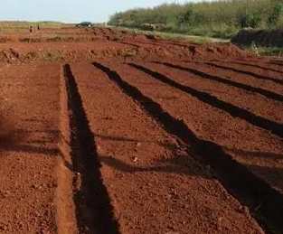

三、植物体的气体交换
叶的形态与解剖——气体交换的"门户"与光合作用的"工厂"
本章后续"气体交换"和"光合作用"都发生在叶上,但叶作为器官,本身有形态与解剖结构——叶的形态决定光截获面积,叶的解剖决定光合效率(栅栏组织/海绵组织的比例、维管束鞘是否含叶绿体是 C3/C4 的关键)。本节补完"叶的形态学基础",为后续 §(一)-(五) 气体交换与光合作用做铺垫。
0.1 叶的组成与形态学术语
完全叶由 3 部分组成(讲义 P359 图 7-5-1):
- 叶片(blade / lamina):叶的主要部分,扁平、绿色,执行光合作用
- 叶柄(petiole):连接叶片与茎,含维管束,负责水分/养料运输;部分植物无叶柄(无柄叶,如禾本科)
- 托叶(stipule):着生于叶柄基部两侧,通常 1 对;形态多样(豌豆大型叶状托叶、刺槐针刺状托叶);部分植物无托叶
禾本科叶(讲义 P365)的特殊结构:叶片+叶鞘(sheath,包裹茎的"套子")+ 叶舌(ligule,叶鞘与叶片交界处的膜质突起)+ 叶耳(auricle,叶鞘基部两侧的"耳朵")——这是识别禾本科植物的关键特征。
叶的形态学术语体系(讲义 P359-P360 图 7-5-2/3):
- 叶形(叶的整体轮廓):卵形/椭圆形/披针形/线形/心形/肾形/圆形/三角形/针形(松针)
- 叶尖:渐尖/急尖/钝形/截形/倒心形
- 叶基:楔形/圆形/心形/耳形/箭形/戟形
- 叶缘:全缘/锯齿/重锯齿/波状/羽状裂/掌状裂
- 叶脉类型:
- 网状脉(reticulate venation):主脉→侧脉→细脉如网——双子叶植物典型
- 平行脉(parallel venation):叶脉平行排列——单子叶植物典型
- 叉状脉(dichotomous venation):叶脉二叉分枝——裸子植物(银杏)、蕨类特有
0.2 单叶与复叶
按叶片数量分(讲义 P362):
- 单叶(simple leaf):一个叶柄上只有 1 个叶片——桃、李、苹果、棉、向日葵
- 复叶(compound leaf):一个叶柄上有多个小叶(leaflet),小叶共同着生在叶轴(rachis)上
- 羽状复叶(pinnate):小叶排列在叶轴两侧,像羽毛
- 奇数羽状复叶:顶端有 1 个小叶——刺槐、槐、月季、玫瑰
- 偶数羽状复叶:顶端无小叶——花生、皂荚
- 二回/三回羽状复叶:叶轴再分枝——合欢(二回)、南天竹(三回)
- 掌状复叶(palmate):小叶从叶柄顶端同一处发出,呈掌状——七叶树、大麻
- 三出复叶(trifoliate):3 小叶——苜蓿、大豆(三出羽状)、酢浆草
- 羽状复叶(pinnate):小叶排列在叶轴两侧,像羽毛
📌 奥赛易错点:复叶 vs 枝条的判断(高中也常考):
- 复叶的小叶腋内无芽(芽只在叶柄基部叶腋处);枝条的小叶(实际是叶)腋内有芽
- 复叶整个脱落;单叶的小叶会逐个脱落(与枝条不同)
- 复叶的小叶与叶柄不在同一平面(一平面分布);枝条的叶呈多方向分布
0.3 叶的解剖结构
双子叶植物叶片的典型解剖结构(讲义 P361 图 7-5-4)由外向内分 3 部分:
- 表皮(epidermis):
- 上表皮:1 层细胞,无叶绿体,外壁角质化,有大量气孔器(有些植物上表皮无气孔,如下表皮气孔多)
- 下表皮:1 层细胞,气孔器密度通常高于上表皮(莲、睡莲例外——上表皮气孔多,因下表皮浸水)
- 保卫细胞(guard cell):肾形(双子叶)或哑铃形(禾本科),含叶绿体(一般表皮细胞无叶绿体),细胞壁不均匀加厚(靠气孔一侧厚,背气孔一侧薄)——这是气孔开闭的结构基础
- 副卫细胞(subsidiary cell):围绕保卫细胞的 1 至多个特化细胞,调节气孔开闭
- 叶肉(mesophyll)——光合作用主战场:
- 栅栏组织(palisade mesophyll):上表皮下方 1-3 层长柱状、排列紧密的细胞,含大量叶绿体——是光合作用的主要场所(光能吸收)
- 海绵组织(spongy mesophyll):栅栏组织下方,形状不规则、排列疏松,胞间隙大——是气体交换和蒸腾的"通道"
- 叶脉(vein):维管束+维管束鞘+上下薄壁细胞
- 主脉/侧脉:含木质部+韧皮部+形成层(部分植物有)
- 细脉:无形成层,只留管胞/筛管,负责"末端分发"
- 维管束鞘(bundle sheath):1 至多层特化细胞,紧密包围维管束——C4 植物的维管束鞘细胞含叶绿体,形成"花环结构 Kranz anatomy"(见 §(五) C4 途径)
0.4 叶的变态(讲义 P370)
叶的变态(modified leaf)指形态与功能特化的叶,常被误认为其他器官:
- 鳞叶(scale leaf):小而无色,覆盖芽的幼叶(芽鳞),保护芽——洋葱鳞茎中央盘的"鳞片状"结构、地下茎的鳞片
- 叶刺(leaf spine):由叶或托叶变成刺——仙人掌科(cactaceae)的刺是叶刺,小檗的刺也是叶刺(三叉刺);区别于茎刺(山楂)和皮刺(月季)
- 叶卷须(leaf tendril):由叶或叶的一部分变成卷须——豌豆的卷须是羽状复叶顶端的小叶变成;菝葜的卷须是托叶变成
- 叶状柄(phyllode / phyllodium):叶柄扁化成叶状,代替叶进行光合——台湾相思树幼树的"叶片"其实是叶状柄(真叶退化)
- 捕虫叶(insectivorous leaf):叶特化成捕虫结构——猪笼草的瓶状捕虫器、捕蝇草的"夹子"、茅膏菜的"粘毛"、狸藻的"囊"
- 苞片(bract):花或花序下的变态叶,常鲜艳——马蹄莲的"白色花瓣"其实是苞片,真正的花小而不显眼;圣诞红的"红色花瓣"也是苞片
📌 奥赛常考:判断"刺"是哪种(讲义 P357 / §2.5.6):
- 叶刺:刺来自叶或托叶(如仙人掌,生于"垫座"上;小檗三叉刺);无分枝(主脉不发达)
- 茎刺:刺来自腋芽,分枝处有叶(如山楂、皂荚);有分枝可能,有维管束与茎相通
- 皮刺:刺来自表皮,易剥离(如月季、蔷薇);无维管束
0.5 叶的生态类型(讲义 P367-P369)
植物叶的形态与解剖因适应不同生境而特化,常见 4 类:
- 旱生叶(xeromorphic leaf):适应干旱环境
- 形态:叶小而厚,常退化成刺(仙人掌),或被绒毛(防止水分散失)
- 解剖:表皮角质层厚、气孔下陷、栅栏组织多层(2-3 层)、海绵组织退化、机械组织发达
- 代表:夹竹桃(气孔藏在表皮毛下"气孔窝"里)、松柏(针叶)
- 水生叶(hydrophytic leaf):适应水生环境
- 形态:叶大而薄,或分裂成丝状(增加与水的接触面积、减小水流冲击)
- 解剖:表皮薄(无角质层或极薄)、无气孔或仅上表皮有气孔、海绵组织发达成通气组织、栅栏组织退化、机械组织少
- 代表:睡莲(浮水叶大而圆、上表皮有气孔)、金鱼藻(沉水叶丝状)
- 阳生叶 / 阴生叶(sun leaf / shade leaf):同种植物的"生态表型"
- 阳生叶:叶片厚而小,栅栏组织 2-3 层,叶绿体多而小,光合能力强
- 阴生叶:叶片薄而大,栅栏组织 1 层(或不明显),叶绿体大,光合能力弱但能利用弱光
- 同一株树冠外层(阳生叶)和内层(阴生叶)结构差异巨大——是植物对光环境的高度适应
- 落叶 vs 常绿(deciduous vs evergreen):并非"生态型",但与"叶寿命/脱落"有关——叶的衰老与离层形成(讲义 P369)涉及 ABA 激素调控
- 落叶植物:叶寿命 1 个生长季,秋末形成离层(abscission layer)(薄壁细胞带),叶从离层处脱落——温带阔叶树(杨、柳、桃、苹果)
- 常绿植物:叶寿命 1 至多年,逐片脱落,无明显落叶期——松柏(针叶寿命 3-5 年)、柑橘、香樟
§0 叶的形态学与解剖学小结
- 叶的3 部分:叶片 + 叶柄 + 托叶;禾本科叶特殊结构 = 叶片+叶鞘+叶舌+叶耳
- 叶脉类型 vs 植物类群:网状(双子叶)/ 平行(单子叶)/ 叉状(裸子如银杏、蕨类)
- 单叶 vs 复叶:复叶小叶腋内无芽、整个脱落;羽状复叶(奇数/偶数/二回/三回)、掌状复叶、三出复叶
- 叶解剖 3 部分:表皮(保卫细胞含叶绿体 + 不均匀加厚)+ 叶肉(栅栏组织+海绵组织)+ 叶脉(维管束+维管束鞘)
- 叶变态 6 种:鳞叶/叶刺/叶卷须/叶状柄/捕虫叶/苞片;刺 3 种:叶刺(仙人掌)、茎刺(山楂)、皮刺(月季)
- 叶生态型 4 类:旱生(厚小+气孔下陷+栅栏发达)/水生(薄大+通气组织)/阳生 vs 阴生(同株结构差异)/落叶 vs 常绿(离层调控)
- C4 植物的"花环结构 Kranz anatomy":维管束鞘细胞含叶绿体,光合作用在鞘细胞中完成——玉米、甘蔗、高粱
- 奥赛常考"叶的功能"对应:① 光合(叶肉)② 气体交换(气孔)③ 蒸腾(气孔)④ 吸收(气孔 + 表皮毛)⑤ 防御(变态刺)
（一）气体交换的结构与调控
植物体与外界进行气体交换通过植物体表进行。主要结构：幼茎和叶表皮的气孔器、老茎周皮上的皮孔。幼根的根毛和表皮细胞也可与土壤空气直接交换。植物内部细胞间隙互相连通形成气体运输网。能够调控气体交换的结构只有表皮上的气孔器。

（二）光合作用概述
总反应式：6CO₂ + 6H₂O → C₆H₁₂O₆ + 6O₂（叶绿体，光能驱动）。注意：O₂ 全部来自 H₂O 的光解，而非 CO₂（同位素示踪 ¹⁸O 证明）。
光合色素：叶绿素 a（反应中心色素，吸收峰约 663 nm/430 nm）、叶绿素 b、类胡萝卜素（胡萝卜素、叶黄素，辅助吸收并保护叶绿素免受光氧化）。
两个光系统：PSI（P700，长波光）和 PSII（P680，短波光）。Z 型电子传递链连接两个光系统，水光解在 PSII 放氧复合体进行，产生 O₂、H⁺ 和电子。
（三）光反应与电子传递链（Z 方案）
光反应场所：类囊体膜。产物为 ATP、NADPH 和 O₂，为卡尔文循环提供能量和还原力。
非循环电子流：H₂O → PSII → 质体醌（PQ）→ 细胞色素 b₆f 复合体 → 质体蓝素（PC）→ PSI → 铁氧还蛋白（Fd）→ FNR → NADPH。电子传递同时泵 H⁺ 入类囊体腔，形成质子梯度驱动 ATP 合酶（光合磷酸化）。
循环电子流：只围绕 PSI，经 Fd → PQ → Cyt b₆f → PC → PSI，产生 ATP 但不产生 NADPH 和 O₂，常用于维持 ATP/NADPH 比例。
光合磷酸化类型：非循环光合磷酸化（同时生成 ATP、NADPH、O₂）；循环光合磷酸化（只生成 ATP）。
（四）卡尔文循环（C₃ 途径）
场所：叶绿体基质。可分为三阶段，每固定 3 分子 CO₂ 生成 1 分子 G3P（净产 1 个三碳糖）：
- 羧化阶段：RuBisCO 催化 RuBP（C5）+ CO₂ → 2 分子 3-PGA（C3）。RuBisCO 是地球上最丰富的蛋白质，具有羧化酶和加氧酶双重活性。
- 还原阶段：3-PGA 被 ATP 磷酸化、NADPH 还原生成 G3P。
- 再生阶段：5 分子 G3P 经一系列转酮、转醛反应消耗 ATP 再生 3 分子 RuBP。
（五）C₃、C₄ 与 CAM 途径比较
为降低光呼吸、提高水分利用效率，不同植物演化出 CO₂ 浓缩机制。

| 特征 | C₃ 植物 | C₄ 植物 | CAM 植物 |
|---|---|---|---|
| CO₂ 初固定酶 | RuBisCO | PEP 羧化酶（叶肉） | PEP 羧化酶（夜间） |
| 初固定产物 | 3-PGA（C3） | 草酰乙酸 → 苹果酸/天冬氨酸（C4） | 苹果酸（储于液泡） |
| 卡尔文循环场所 | 叶肉细胞叶绿体 | 维管束鞘细胞叶绿体 | 叶肉细胞叶绿体（白天） |
| 特殊解剖结构 | 无 | 花环结构（Kranz anatomy） | 无 |
| 气孔开闭 | 白天开放 | 白天开放 | 夜间开放、白天关闭 |
| 光呼吸 | 强 | 极弱 | 极弱 |
| 代表植物 | 水稻、小麦、大豆 | 玉米、甘蔗、高粱、苋菜 | 仙人掌、菠萝、景天、兰花 |
（六）光呼吸
概念：当 O₂ 浓度高、CO₂ 浓度低时，RuBisCO 发挥加氧酶活性，使 RuBP 与 O₂ 结合，生成 1 分子 3-PGA 和 1 分子 2-磷酸乙醇酸；后者经一系列反应释放 CO₂ 并消耗 ATP，最终重新生成 3-PGA。
场所：叶绿体、过氧化物酶体、线粒体三个细胞器协同完成。
生理意义：（1）消耗过剩光能，保护光合机构；（2）回收 75% 的碳原子；（3）为甘氨酸、丝氨酸合成提供碳架；（4）与氮代谢相关。但总体上是能量浪费，使 C₃ 植物光合效率降低。
（七）呼吸作用与气体交换的关系
植物细胞同时进行光合作用和呼吸作用。白天光照下，光合作用释放的 O₂ 可部分供线粒体呼吸使用，呼吸释放的 CO₂ 可被叶绿体再利用；净气体交换取决于光合速率与呼吸速率的差值。夜间只有呼吸作用，表现为吸收 O₂、释放 CO₂。
光呼吸 vs 暗呼吸：光呼吸在光下发生，消耗 O₂ 释放 CO₂，与光合作用竞争 RuBisCO；暗呼吸（线粒体呼吸）在有光/无光下均进行，分解有机物释放能量。
（八）影响光合作用的因素
内部因素：叶龄、叶绿素含量、RuBisCO 含量与活性、气孔导度、叶肉导度、C₃/C₄/CAM 类型。
外部因素：
- 光强：光饱和点、光补偿点。C₄ 植物光饱和点高于 C₃；阳生植物高于阴生植物。
- CO₂ 浓度：CO₂ 饱和点、CO₂ 补偿点。C₄ 植物 CO₂ 补偿点低于 C₃。
- 温度：通过影响酶活性（尤其是 RuBisCO、PEP 羧化酶）影响光合。C₄ 植物最适温度较高。
- 水分：缺水导致气孔关闭，CO₂ 供应不足，同时光合机构受损。
- 矿质营养：N、Mg 影响叶绿素；P 影响 ATP；K 影响气孔开闭与光合产物运输；Mn、Cl 参与水光解。
呼吸代谢多样性：糖酵解/EMP、TCA/三羧酸循环、戊糖磷酸途径、末端氧化酶多样性、抗氰呼吸
呼吸代谢的 4 大多样性：在长期进化过程中，植物为适应多变环境，形成了呼吸代谢的"多样性"：
- ① 呼吸途径的多样性：糖酵解（EMP）、三羧酸循环（TCA）、戊糖磷酸途径（PPP/HMP）、乙醇酸氧化途径（光呼吸）
- ② 呼吸底物的多样性：糖（最常见）、蛋白质、脂质、有机酸。脂质经 β-氧化产生乙酰辅酶 A 进入 TCA
- ③ 呼吸电子传递途径的多样性：主路（细胞色素途径，CN⁻ 敏感）、支路（抗氰呼吸途径，AOX 末端）
- ④ 末端氧化酶的多样性：细胞色素 c 氧化酶（主线粒体）、交替氧化酶（AOX，线粒体内膜）、酚氧化酶（质体/微体）、抗坏血酸氧化酶（细胞质）、乙醇酸氧化酶（过氧化物酶体）
为何植物呼吸有如此多样性？这是植物对多样化功能 + 多样化环境的长期适应——完成多种功能（生长、发育、修复、防御），适应多种环境（旱、涝、冷、热、病原菌侵袭等）。
无氧呼吸 vs 有氧呼吸：判断标准：是否需要消耗分子氧作为最终电子受体。
- 无氧呼吸：电子最终受体不是 O₂，而是丙酮酸（→乳酸）或乙醛（→乙醇）。每分子葡萄糖仅净产 2 ATP
- 有氧呼吸：电子最终受体是 O₂，H₂O 是产物。每分子葡萄糖净产 30-32 ATP
无氧呼吸产物因种/器官而异：① 多数根、果实（香蕉、苹果）→ 乙醇（酒精发酵）；② 马铃薯块茎、甜菜块根、玉米胚 → 乳酸（乳酸发酵）；③ 苹果梨果实中，乳酸发酵与乙醇发酵同时存在。
为什么有人尿、蚕豆根、甜菜根会"刺激"人的眼睛或引起不适？甜菜根细胞中 乳酸脱氢酶（LDH） 和 乙醇脱氢酶（ADH） 同时存在；蚕豆根受淹产生 HCN 中间产物。植物乳酸发酵可能产生手性不同的乳酸异构体。
抗氰呼吸（CN-resistant respiration）的核心机制：1937 年，D. M. James 等发现天南星科植物佛焰花序呼吸产热但不受氰化物抑制，这条电子传递链绕过了 Cyt c 氧化酶（COX, 复合物 IV），最终交给一种对 CN⁻ 不敏感的交替氧化酶（Alternative Oxidase, AOX）。AOX 直接将电子从泛醌（UQ）传给 O₂ 生成 H₂O。这条通路不泵质子，因此每电子仅产生 1/2 或 1/3 的 ATP（甚至 0）。
抗氰呼吸的本质是"能量消耗器"：从复合物 I 或 II 到 AOX，分别只有 1 次或 0 次跨膜质子传递；与之对应，每对电子从 NADH 流入 AOX 仅泵出 2 H⁺（或 0），而经主链（I+III+IV）共泵出 10 H⁺。因此抗氰呼吸"散失"约 60% 的化学势（以热形式释放），只保留 40% 用于 ATP 合成。
抗氰呼吸的四大功能：
- ① 产热增温：天南星、莲花、热带附生兰花的佛焰花序通过抗氰呼吸产生 30-40°C 局部高温，使香味物质（胺、吲哚、萜类）挥发，吸引昆虫传粉
- ② 散热：在能量过剩时（如强光下光合电子传递过快、营养过剩），通过抗氰呼吸"散"掉多余能量，防止电子传递链过度还原（类似 UCP 的解偶联机制）
- ③ 调节呼吸商（RQ）：抗氰呼吸每消耗 1 分子 O₂ 不对应释放 1 分子 CO₂，可使 RQ 偏离 1 → 在呼吸商变化中可作为判断呼吸途径切换的标志
- ④ 抗逆与抗病：低温、干旱、病原菌感染、果实成熟时 AOX 表达量大幅上调，防止活性氧积累，保护线粒体
AOX 的进化地位：AOX 是古老的二铁蛋白，存在于几乎所有植物、原生生物、某些真菌和动物中。AOX 与 COX 同时存在于同一线粒体内，受核基因 Aox1/Aox2 编码亚家族调控，是分支电子流和总呼吸速率的"分子开关"。
5 种末端氧化酶的比较：
| 末端氧化酶 | 定位 | 辅基 | CN⁻ 敏感 | 主要功能 |
|---|---|---|---|---|
| 细胞色素 c 氧化酶 (COX) | 线粒体内膜 | 血红素 a/a3 + Cu_B | 敏感 | 主呼吸链终端、泵质子、产 ATP |
| 交替氧化酶 (AOX) | 线粒体内膜 | 双铁中心 | 不敏感 | 抗氰呼吸、产热、散热、抗逆 |
| 酚氧化酶 (PPO) | 质体、微体 | Cu²⁺ | 敏感 | 酚类→醌类（创伤褐变、制茶发酵） |
| 抗坏血酸氧化酶 (AAO) | 细胞质 | Cu²⁺ | 敏感 | Vc 氧化、与受精和胚珠发育有关 |
| 乙醇酸氧化酶 (GO) | 过氧化物酶体 | FMN | 不敏感 | 光呼吸末端（乙醇酸→乙醛酸） |
酚氧化酶的"为何要生锈"问题：切苹果、马铃薯、藕会褐变是因为酚类物质被 PPO 氧化成邻苯醌。褐色醌类有抗菌作用——这是植物的"受伤防御反应"。但在制茶中，醌类是色香味来源：
- 绿茶：杀青（高温破坏 PPO）→ 酚类不氧化 → 保持绿叶原色
- 红茶：揉捻（促进 PPO 接触酚类）→ 充分氧化 → 茶黄素、茶红素呈红色
- 乌龙茶：半发酵（轻氧化）→ 部分醌化 → 兼具红绿茶特点
- 烤烟：杀青 + 发酵 → 减少醌类保留香气
呼吸代谢的能荷（energy charge）调控：细胞中 ATP、ADP、AMP 三者比例反映能量状态，Atkinson 提出"能荷"概念：
能荷 = [ATP] + ½[ADP] / [ATP] + [ADP] + [AMP]
- 能荷 = 1.0：完全充电（全部 ATP）
- 能荷 = 0.5：完全放电（一半 ATP，一半 AMP）
- 能荷 = 0：完全耗竭（全部 AMP）
- 活细胞能荷一般 0.75-0.95（高度维持于"高能"状态）
能荷的反馈调节：高能荷（[ATP]↑）反馈抑制糖酵解关键酶（PFK-1、PK）和 TCA 关键酶，减缓糖氧化；低能荷（[AMP]↑）促进葡萄糖分解和 ATP 生成。这种"按需供能"的负反馈调节是细胞代谢经济性的核心。
巴斯德效应（Pasteur effect）：有氧抑制无氧呼吸——O₂ 促进有氧呼吸，抑制发酵（LDH、ADH 活性受抑制）。这在贮藏中很重要：果蔬贮藏的"低氧+低温"可降低呼吸总量（找到有氧呼吸与无氧呼吸的平衡点）。
Custers 效应：巴斯德效应的逆效应——短时间高浓度 O₂ 反而促进无氧呼吸（与乙醇发酵有关）。这解释了某些果实（如苹果）短期高氧处理后的"反弹呼吸"。
1 分子葡萄糖有氧呼吸的总能量核算：EMP 阶段（细胞质）：1G → 2 丙酮酸 + 2ATP + 2NADH。NADH 通过甘油-3-磷酸穿梭进入线粒体（动物），每 NADH 产 1.5 ATP（实际细胞中常用此值，理论值 2.5 ATP）。
总反应：1 葡萄糖 → 30 或 32 ATP（理论值）
- EMP：2 ATP（底物水平磷酸化）+ 2 NADH（细胞质）× 1.5 = 3 ATP
- 丙酮酸脱氢酶（PDH，EMP-TCA 桥梁）：2 NADH（线粒体）× 2.5 = 5 ATP
- TCA：2 GTP（≈2 ATP）+ 6 NADH × 2.5 = 15 ATP + 2 FADH₂ × 1.5 = 3 ATP
- 合计：2 + 3 + 5 + 2 + 15 + 3 = 30 ATP（动物/细菌/真核生物中 G-3-P 穿梭）；若用苹果酸-天冬氨酸穿梭，EMP 的 2 NADH × 2.5 = 5 ATP，合计 32 ATP
能量贮存效率：30 ATP × 30.5 kJ/mol = 915 kJ/mol；葡萄糖总能量 2870 kJ/mol；效率约 33.2%——其余以热能散失（这就是植物"发烧"的基础）。生物体氧化效率与内燃机（25-30%）相当，远高于煤炭直接燃烧（<10%）。
呼吸速率 vs 呼吸商（RQ）vs 测定方法：
- 呼吸速率：单位时间单位生物量 CO₂ 释放量（也可用 O₂ 吸收量）
- 呼吸商 RQ = 释放 CO₂ / 吸收 O₂：反映底物性质和氧化程度
不同底物的 RQ：
- 纯糖氧化（葡萄糖）：RQ = 1.0（理论）
- 脂肪（油酸 C18:1）：RQ ≈ 0.71
- 有机酸（柠檬酸）：RQ ≈ 1.33
- 蛋白质：RQ ≈ 0.80
RQ 偏离 1 的生物学原因：① 底物切换（糖→脂→酸）；② 部分氧化产物（不完全氧化导致累积有机酸）；③ 抗氰呼吸活跃（消耗 O₂ 但不释放 CO₂）。通过监测 RQ 变化，可推测植物代谢底物或呼吸途径的转换。
呼吸速率的"快慢"决定因素：① 原生质丰富程度（生殖器官 > 营养器官；幼嫩 > 衰老）；② 温度（最适 25-35°C）；③ 水分；④ O₂ 与 CO₂ 浓度（低 O₂/高 CO₂ 抑制呼吸——这就是果蔬贮藏的原理）；⑤ 解偶联剂（如植物 UCP 蛋白）或抗氰呼吸活跃。
光合与呼吸的能量关系：光合作用将光能 → 电能 → 活跃化学能（ATP/NADPH）→ 稳定化学能（糖/脂等）；呼吸作用将稳定化学能 → ATP → 推动生命活动。光合是储能与固碳，呼吸是放能与释碳。物质（CO₂、H₂O）可循环，能量单向流动。
韧皮部同化物运输的"特种军"：P 蛋白与胼胝体：
P 蛋白（Phloem Protein）：位于筛管分子（SE）内壁上，是韧皮部特有蛋白。健康筛管中 P 蛋白分散在细胞质中；筛管受伤（切开、刺破）时，P 蛋白迅速聚集成凝胶状物，堵塞筛孔防止汁液流失。
胼胝体（Callose）：β-1,3-葡聚糖，由筛板处细胞合成并分泌。胼胝体沉积在筛孔边缘，逐渐加厚形成永久堵塞，是筛管受伤后的"二次封堵"。
P 蛋白 + 胼胝体 = 筛管的"双层防御"：P 蛋白即时凝胶化（秒-分级）→ 胼胝体缓慢沉积（分-小时级）。
蚜虫吻刺的"反防御"机制：蚜虫通过针状口器（口针）插入筛管取食，看似躲过了 P 蛋白和胼胝体，但实际上蚜虫唾液中含有"反防御武器"：
- ① 黏附蛋白+特定酶：与 P 蛋白结合或改变其结构，抑制其聚合
- ② β-1,3-葡聚糖酶：分解已形成的胼胝体
- ③ 其他唾液成分：抑制植物细胞合成胼胝体
因此蚜虫并非"绕过"植物防御，而是主动分泌"抑制剂"干扰筛管的防御反应，让筛孔始终保持开放状态以持续取食。这就是为什么蚜虫能长时期固定在植物上一动不动地吸食韧皮部汁液。

第九章第三节 PPT 补充要点速览
- 呼吸代谢 4 多样性：途径、底物、电子传递、末端氧化酶（适应多样化功能+环境）
- 无氧呼吸产物：多数果实→乙醇；马铃薯/甜菜/玉米胚→乳酸；苹果梨两种都有
- 抗氰呼吸：UQ→AOX→O₂，不泵质子，产热 60% 散失；4 功能（产热/散热/调 RQ/抗逆）
- 5 种末端氧化酶：COX（主线粒体）、AOX（抗氰）、PPO（酚类氧化）、AAO（Vc 氧化）、GO（光呼吸）
- 制茶原理：绿茶杀青（破 PPO 保酚类）vs 红茶揉捻（促 PPO 醌化）vs 乌龙茶半发酵
- 能荷：活细胞 0.75-0.95；ATP/ADP 反馈调节代谢
- 巴斯德效应：有氧抑制无氧；Custers 效应：高氧短期内促无氧（贮藏找"低氧+低温"平衡点）
- 1G → 30-32 ATP，效率 33.2%，热能散失是"发烧"基础
- RQ：糖 1.0，脂肪 0.71，有机酸 1.33，蛋白质 0.80（底物探针）
- P 蛋白 + 胼胝体：筛管双层防御（快速凝胶+缓慢沉积）
- 蚜虫反防御：唾液含黏附蛋白+β-1,3-葡聚糖酶，抑制 P 蛋白聚合+分解胼胝体